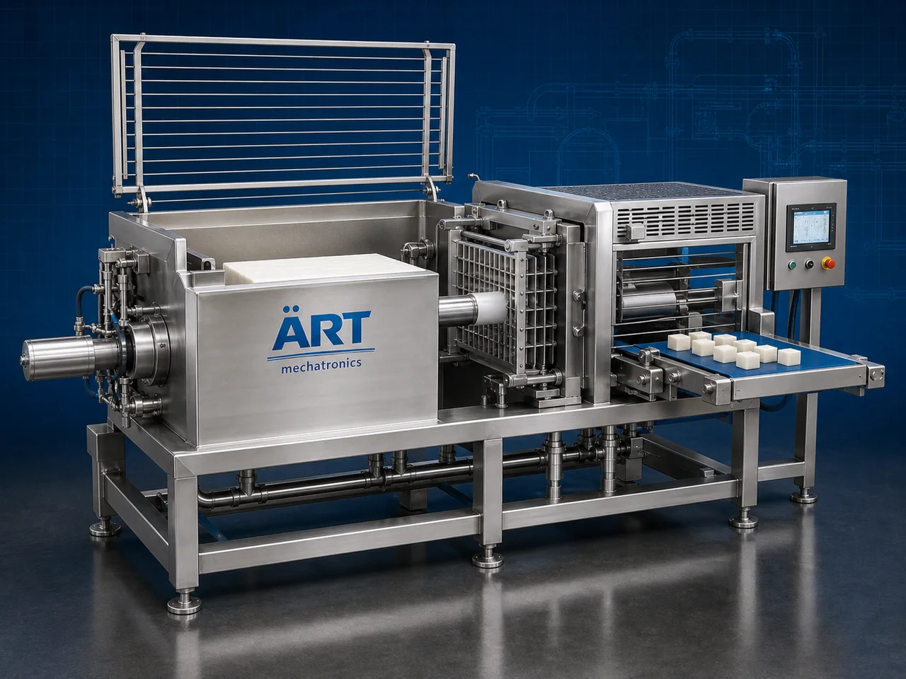

Industrial Cube Cutter Machine (Automatic Dicing & Cube Cutting System)
An Industrial Cube Cutter Machine, also known as a Dicing Machine, Food Cube Cutting Machine, Vegetable Cube Cutter, or Automatic Food Dicing System, is an advanced food processing solution designed for precision cube cutting, dicing, slicing, strip cutting, shredding, and high-speed food processing operations for vegetables, fruits, paneer, cheese, meat alternatives, potatoes, carrots, onions, fruits, tofu, snacks, and industrial food products.

About the Cube Cutter
Industrial cube cutter systems are widely used for:
- Vegetable dicing operations
- Fruit cube cutting
- Paneer and cheese cutting
- Potato cube processing
- Frozen food preparation
- Ready-to-cook food processing
- Snack ingredient preparation
- Industrial food size reduction operations
The machine improves:
- Cutting uniformity
- Production efficiency
- Food processing speed
- Product consistency
- Labor reduction
- Hygiene standards
- Industrial food quality
Industrial cube cutter machines use:
- Precision stainless steel cutting blades
- Servo synchronized cutting systems
- PLC and HMI automation controls
- Conveyor synchronized feeding systems
- Hygienic food-grade construction
to automatically cut food products into uniform cubes with superior accuracy and high production efficiency.
Industrial cube cutter machines are widely used in industries such as:
Food processing industries Frozen food industries Snack manufacturing industries Ready-to-eat food industries Vegetable processing industries Fruit processing industries Dairy industries Commercial kitchen industries
where uniform cutting, hygienic processing, and high-speed food production are essential.
The machine is highly suitable for:
- Vegetable cube cutting
- Fruit dicing operations
- Paneer and cheese cutting
- Frozen food preparation
- Ready-to-cook food processing
- Industrial food automation systems
ART Mechatronics offers high-performance industrial cube cutter machines, engineered for continuous industrial operation, hygienic food processing, precision cube cutting performance, and reliable long-term industrial productivity.
Working Principle of Industrial Cube Cutter Machine
- 1. Product Feeding & Conveyor Handling Food products are automatically transferred through synchronized feeding systems for cutting operation.
- 2. Product Alignment & Positioning Process Machine automatically aligns and positions products before cube cutting operation.
Servo synchronization ensures smooth product movement and accurate cube cutting operations.
- 3. Cube Cutting Operation Machine handles cutting of: ✔ Potatoes ✔ Carrots ✔ Onions ✔ Fruits ✔ Paneer ✔ Cheese ✔ Tofu ✔ Industrial food products
accurately and continuously.
- 4. Precision Dicing & Cube Cutting Process Machine performs: Cube cutting Dicing Strip cutting Slicing Shredding Uniform size reduction
for efficient industrial food processing operations.
- 5. Intelligent Automation & Hygiene Integration Optional systems include: Automatic feeding systems Washdown compatible design Safety guarding systems Variable speed controls Food-grade conveyor systems
- 6. Finished Product Discharge Processed food products discharged automatically for: Packaging operations Cooking processes Freezing operations Warehouse storage Export shipment handling
Types of Industrial Cube Cutter Machines
- 1. Vegetable Cube Cutter Machine Designed for: ✔ Vegetable dicing and processing applications
- 2. Fruit Dicing Machine Suitable for: ✔ Fruit processing and ready-to-eat food systems
- 3. Paneer & Cheese Cube Cutter Uses: ✔ Dairy and food ingredient processing systems
- 4. Frozen Food Cube Cutting Machine Designed for: ✔ Frozen food preparation operations
- 5. Servo Driven Cube Cutter Machine Suitable for: ✔ Precision high-speed food cutting operations
- 6. Fully Automatic Food Dicing System Designed for: ✔ Complete industrial food processing automation lines
Industries Using Industrial Cube Cutter Machines
🍅 Food Processing Industry Vegetables, fruits, ready-to-cook products, and industrial food cutting systems. 🧀 Dairy Industry Paneer, cheese, tofu, and dairy ingredient processing systems. 🍟 Snack Manufacturing Industry Potato processing, frozen snacks, and food ingredient preparation systems. 🥗 Ready-to-Eat Food Industry Prepared meals, salad ingredients, and convenience food processing systems. ❄️ Frozen Food Industry Frozen vegetables, fruits, and food preparation operations. 🛒 FMCG Food Industry Packaged food ingredients and industrial food processing systems.
Features & Advantages
- High-speed automatic cube cutting operation
- Accurate and uniform food cutting systems
- Hygienic stainless steel food-grade construction
- PLC and servo automation control systems
- Improves production efficiency and food consistency
- Reduces manual cutting dependency
- Supports multiple food products and cube sizes
- Reliable long-term industrial performance
- Smooth integration with food processing automation lines
Technical Highlights
Machine Type: Industrial cube cutter machine Food dicing system Automatic food cube cutting machine Product Compatibility: Vegetables Fruits Paneer Cheese Tofu Potatoes Industrial food products Integration: Servo cutting systems Food-grade conveyor systems Automatic feeding systems Washdown compatible systems Features: PLC control system Touchscreen HMI Stainless steel construction Variable speed controls Precision cutting blade systems Applications: Vegetable dicing Fruit cube cutting Food size reduction Frozen food preparation Industrial food processing Automation: Semi-automatic Fully automatic industrial systems
Turnkey Food Cutting Solutions
ART Mechatronics offers: Complete food cutting systems Automatic dicing and cube cutting solutions Industrial food processing automation systems Food conveyor integration systems Installation & commissioning After-sales service & AMC
Why Choose Art Mechatronics
Expertise in industrial food processing and automation systems Customized cube cutting solutions for multiple food industries High-performance and hygienic food processing technology Advanced PLC and servo automation systems Proven industrial food processing performance across sectors
Applications
Vegetable Processing Plants Fruit Processing Facilities Frozen Food Manufacturing Units Snack Processing Industries Dairy & Paneer Manufacturing Plants Industrial Food Processing Industries
Related Process Equipment machines
Get pricing & specs for the Cube Cutter
Share the product, target capacity, current process and plant location. These details help our engineers discuss the right machine or line configuration.
One partner, from design to start-up
ART Mechatronics designs, manufactures, installs and commissions your Cube Cutter solution with regional presence in India, UAE and Thailand.